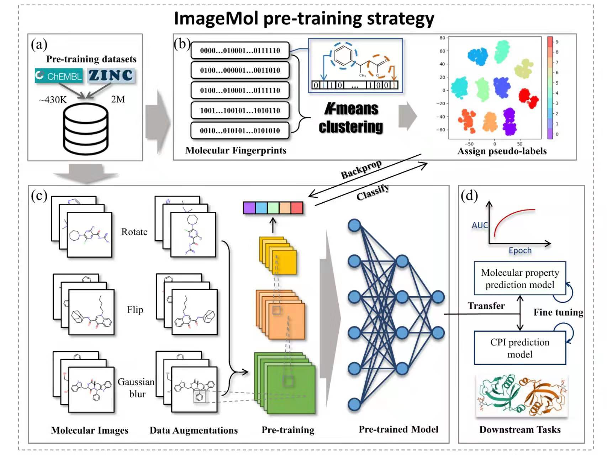

分子性质预测 (Molecular properties prediction) 是对分子在人体内的ADMET（吸收、分布、代谢、排泄和毒性）等性质进行预测。在药物开发的早期阶段，可以根据分子性质对先导化合物进行有针对性地选取和优化改造，这将有利于提高药物研发的成功率。
论文“ImageMol: A self-supervised pre-training network based on molecular images”将在百万级分子图像上对模型进行预训练从而增强模型的鲁棒性及泛化能力，随后将预训练好的模型迁移至下游“分子性质预测”任务，通过微调以提高任务的表现。

预训练
预训练阶段用到的数据集为从ZINC数据库提取的两百万的分子数据。
获取两百万分子的SMILES
# 以下是数据集的下载路径，预训练数据集在zinc_standard_agent这个文件夹中，我们需要的是原始的SMILES wget http://snap.stanford.edu/gnn-pretrain/data/chem_dataset.zip
构建分子图像
# 利用DRKit将SMILES转为分子图像示例
from rdkit import Chem
from rdkit.Chem.Draw import rdMolDraw2D
mol = Chem.MolFromSmiles('Cl[C@H](F)NC\C=C\C')
d = rdMolDraw2D.MolDraw2DCairo(250, 200) # or MolDraw2DSVG to get SVGs
d.DrawMolecule(mol)
d.FinishDrawing()
d.WriteDrawingText('atom_annotation_1.png')
进行预训练
# 运行预训练代码，在本文件中参数及数据路径已设置好，您也可以根据需要设置为自己的数据集文件，具体请看代码 python FP_cluster_resnet.py
加载模型
鉴于在大型数据集上进行预训练耗时较长且需要一定数量的设备支持，我们提供了已训练好的模型供大家使用。
# 加载预训练好的模型
import torch
import torchvision.models as models
import os
# 默认checkpoint_path='./model/checkpoints/checkpoint_final.pth.tar'
if os.path.isfile(checkpoint_path):
print("=> loading checkpoint '{}'".format(checkpoint_path))
checkpoint = torch.load(checkpoint_path)
pre_trained_model = models.resnet18(pretrained=False)
pre_trained_model.load_state_dict(checkpoint['state_dict'])
else:
print("=> no checkpoint found at '{}'".format(checkpoint_path))
return None
分子性质预测
分子性质的数据集来自MolNet数据集，在本工作中用到的数据集分别是BBBP、Tox21、ToxCast、SIDER、ClinTox、MUV、HIV和BACE。
处理数据集
# 以下是数据集的下载路径，相应的数据集在相应的文件夹中，我们需要的是原始的SMILES
wget http://snap.stanford.edu/gnn-pretrain/data/chem_dataset.zip
# 以BBBP为例，进入到原始数据的文件夹下面获取标签及smiles
cd chem_dataset/dataset/bbbp/raw
# 利用DRKit将SMILES转为分子图像示例
from rdkit import Chem
from rdkit.Chem.Draw import rdMolDraw2D
mol = Chem.MolFromSmiles('Cl[C@H](F)NC\C=C\C')
d = rdMolDraw2D.MolDraw2DCairo(250, 200) # or MolDraw2DSVG to get SVGs
d.DrawMolecule(mol)
d.FinishDrawing()
d.WriteDrawingText('atom_annotation_1.png')
划分数据集
# 读取具体数据集的文件 data_df = pd.read_csv(dataset_file, sep=',', encoding='gbk') smiles_list = data_df['smiles'] # 不同于普通任务的随机划分，性质预测的数据集需要按骨架进行划分 train_smiles, valid_smiles, test_smiles = random_scaffold_split(smiles_list=smiles_list, seed=split_seed) # 带标签的数据集 train_result_smiles = split_dataset(train_smiles, original_file) valid_result_smiles = split_dataset(valid_smiles, original_file) test_result_smiles = split_dataset(test_smiles, original_file)
加载数据集
# 以训练集为例，验证集、测试集方法类似
normalize = transforms.Normalize(mean=[0.485, 0.456, 0.406],
std=[0.229, 0.224, 0.225])
train_dataset = DownstreamDataset(image_path, train_result_smiles, transform=transforms.Compose([
torchvision.transforms.RandomGrayscale(p=0.2),
torchvision.transforms.RandomVerticalFlip(),
transforms.ToTensor(),
normalize,
]))
train_loader = torch.utils.data.DataLoader(
train_dataset,
batch_size=batch_size,
shuffle=True,
)修改模型结构
由于分子性质预测任务既有二分类任务，也有多分类任务，因此我们需要修改网络结构以适应不同类型的任务。
# 根据不同的任务指定不同的分类数目
if compound_dataset == "tox21":
num_tasks = 12
elif compound_dataset == "hiv":
num_tasks = 1
elif compound_dataset == "muv":
num_tasks = 17
elif compound_dataset == "bace":
num_tasks = 1
elif compound_dataset == "bbbp":
num_tasks = 1
elif compound_dataset == "toxcast":
num_tasks = 617
elif compound_dataset == "sider":
num_tasks = 27
elif compound_dataset == "clintox":
num_tasks = 2
else:
raise ValueError("Invalid dataset name.")
# 加载下游任务网络
downstream_model = DownStreamNet(pre_trained_model, num_tasks)微调模型
# 设置优化器
optimizer = torch.optim.SGD(
filter(lambda x: x.requires_grad, downstream_model.parameters()),
lr=lr,
momentum=0.9,
weight_decay=wd,
)
# 设置损失函数
criterion = nn.BCEWithLogitsLoss(reduction='none')
# 开始训练
for epoch in range(1, epochs + 1):
downsteam_train(downstream_model, criterion, device, train_loader, optimizer)
eval_train = True
if eval_train:
train_acc = eval(downstream_model, device, train_loader)
else:
print("omit the training accuracy computation")
train_acc = 0
val_acc = eval(downstream_model, device, valid_loader)
test_acc = eval(downstream_model, device, test_loader)引用
本工作暂未发表，如有兴趣欢迎联系！